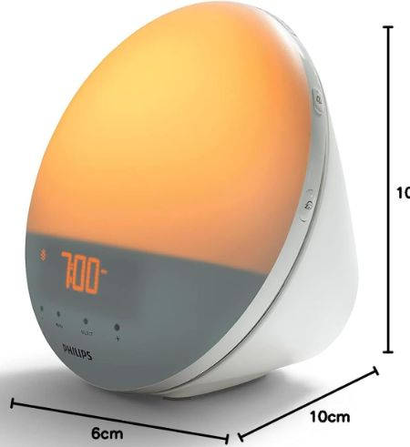
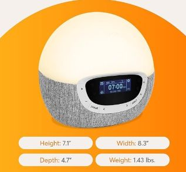
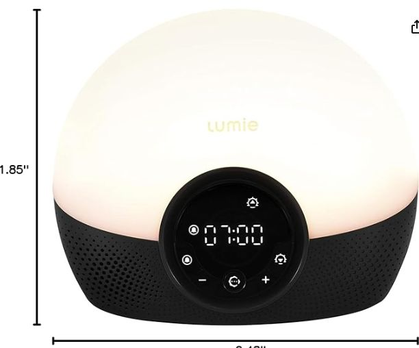
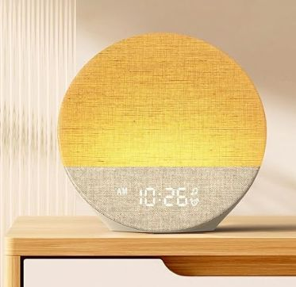
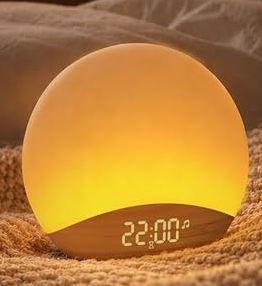

🌅 Top Wake-Up Lights for Gentle Mornings — Realistic Sunrise, Sunset & Audio Quality Compared
All 5 picks side by side — find your match in seconds
| Product | Price | Sunrise / Sunset | Brightness Settings | Colors | Radio | Alarm Sounds |
|---|---|---|---|---|---|---|
| Philips SmartSleep | $$$ | Sunrise 20-40 min Sunset 5-60 min |
20 | Orange → White | ✔ | 5 or radio |
| Lumie Bodyclock Shine 300 | $$$ | Sunrise 15-90 min Sunset 15-90 min |
20 | Red → White | ✔ | 15 or radio |
| Lumie Sunrise Alarm | $$ | Sunrise 30 min Sunset 30 min |
10 | White + 6 colors | ✗ | 6 |
| Dreamegg Sunrise 1 | $$$ | Sunrise 5-60 min Auto-off 5-180 min |
Slider | 9 dimmable | ✗ | 6 alarm + 29 sounds |
| Reacher Sunrise Alarm | $$ | Sunrise 5-60 min Auto-off 5-180 min |
Slider | 8 dimmable | ✗ | 3 alarm + 26 sounds |
* $ = Budget (<$50) $$ = Mid-range ($50–99) $$$ = Premium ($100+)




